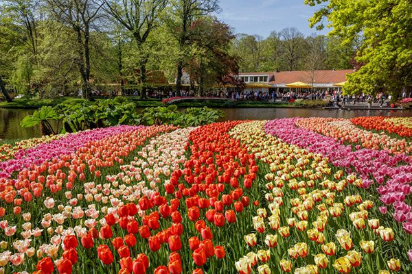

士林官邸
Shilin Residence
地址：台北市士林區福林路60號
士林官邸座落於中山北路五段與福林路的交叉路口上，原本是士林園藝實驗分所，後改為總統官邸，1996年正式開放民眾免費參觀。園區內悠然閑靜、鳥語花賞，規劃有中西式庭園、玫瑰園、溫室花卉栽培、露天音樂舞台和官邸正房，假日並常有表演團體的演出，夏季(7~10月)士林官邸還會延長開放時間至夜間9點；園區外的官邸公園則是24小時全日開放。
賞花的好月分在秋到春季，秋季的「菊展」是士林官邸年年都會舉辦的花卉展覽；冬天以後，士林官邸內的梅花季到來，銀白一片的寒梅與玫瑰一齊開放，美不勝收。料峭春風吹過，過年前後玫瑰、茶花、蘭花、紫藤花持續繽紛到晚春，讓士林官邸就像是一個大花園般美麗。庭園景觀與特殊的歷史背景，士林官邸除了是民眾休憩遊玩的場所，更是外國觀光客很喜愛的一個景點。
更多介紹：